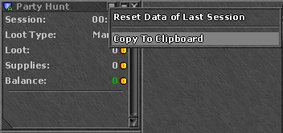

Tibia Party Loot
Need to share loot with your party members? Simply copy the output from the in-game “party hunt analyser” and paste it into the field below. The tool will then show you each members loot, supplies, and owed split.
- This is a new beta version of the tool! For previous version visit https://adgonz90.github.io/TibiaPartyLoot
- You can now modify party member's name, loot, and supplies in the table and have the party details automatically update (must click outside of text field).
- Check the I box if that member should be ignored from party details.
- Check the K box if that member is keeping the loot they picked up.
- Check the W box if that member is getting paid their waste only.
- If a member has more loot than their split, their row will be highlighted red.
- New split formula for when profit is negative, each member will get a percentage of loot based on their supplies used.
- Hit the Copy button to get the bank NPC transfer message, except on negative split. Copy button will momentarily turn green when successful.
